Data Management
(All content from Lewis (2024))
3 November, 2025
Data Organization
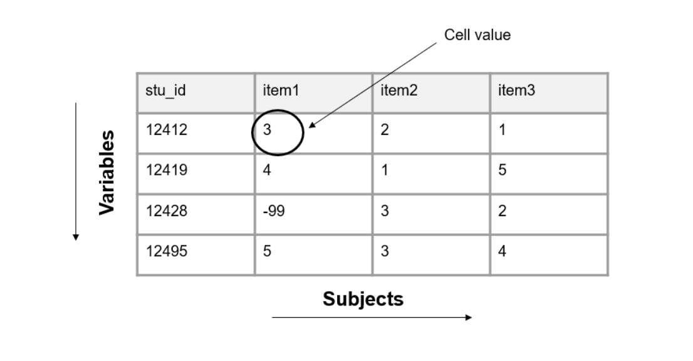Basic format of a dataset from Lewis (2024).
Dataset organization rules
Rectangular
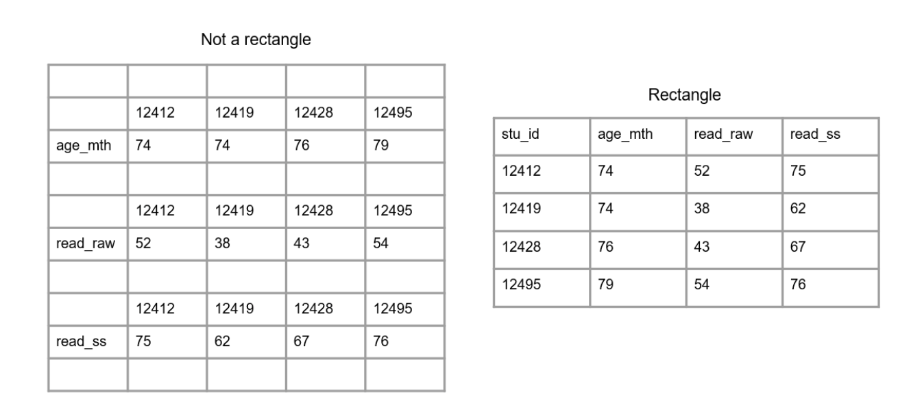A comparison of non-rectangular and rectangular data from Lewis (2024).
Dataset organization rules
Column values should be consistent
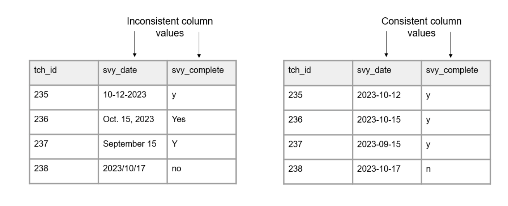A comparison of inconsistent and uniform variable values from Lewis (2024).
Dataset organization rules
Columns should adhere to your expected variable type
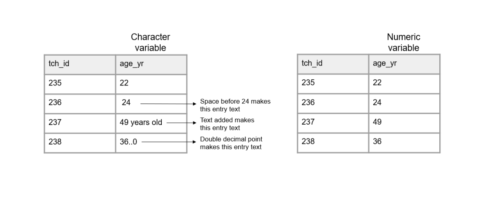A comparison of variables adhering and not adhering to a data type from Lewis (2024).
Dataset organization rules
A variable should only collect one piece of information
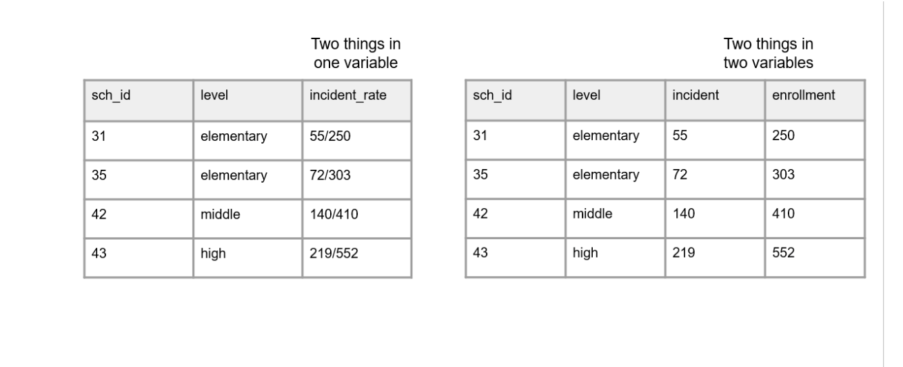A comparison of two things being measured in one variable and two things being measured across two variables from Lewis (2024).
Dataset organization rules
All cell values should be explicit
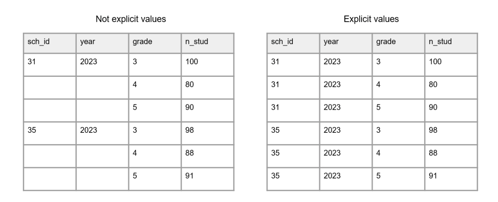A comparison of variables with empty cells and variables with not empty cells from Lewis (2024).
Dataset organization rules
All variables should be explicit
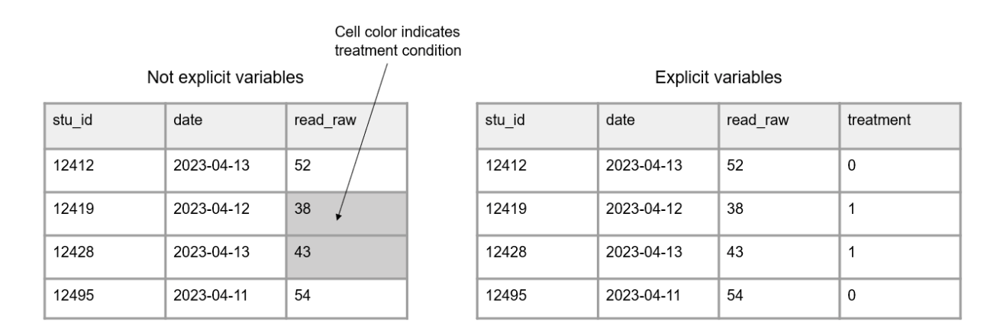A comparison of information being indicated through cell color and information being provided in an indicator variable from Lewis (2024).
Linking data
Database design
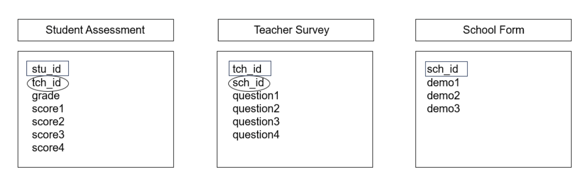Three tables with primary and foreign keys from Lewis (2024).
Linking data
Horizontal joins
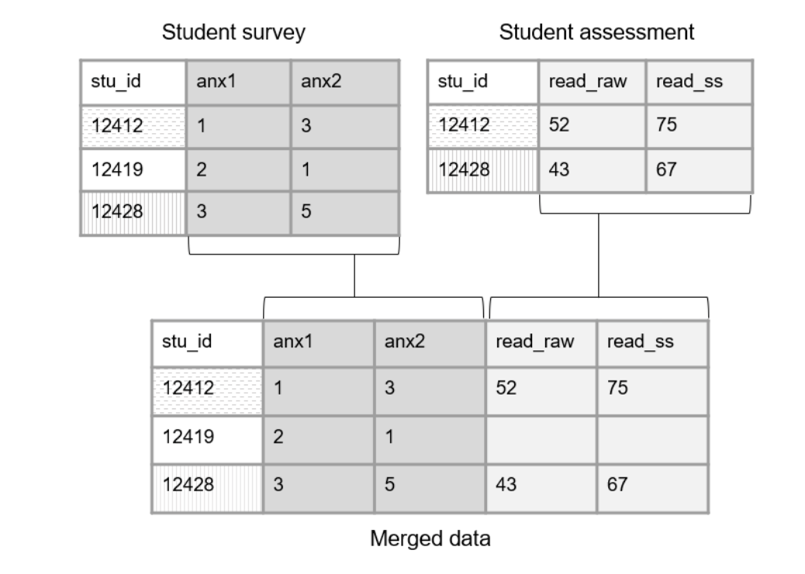Linking data through primary keys from Lewis (2024).
Linking data
Foreign keys
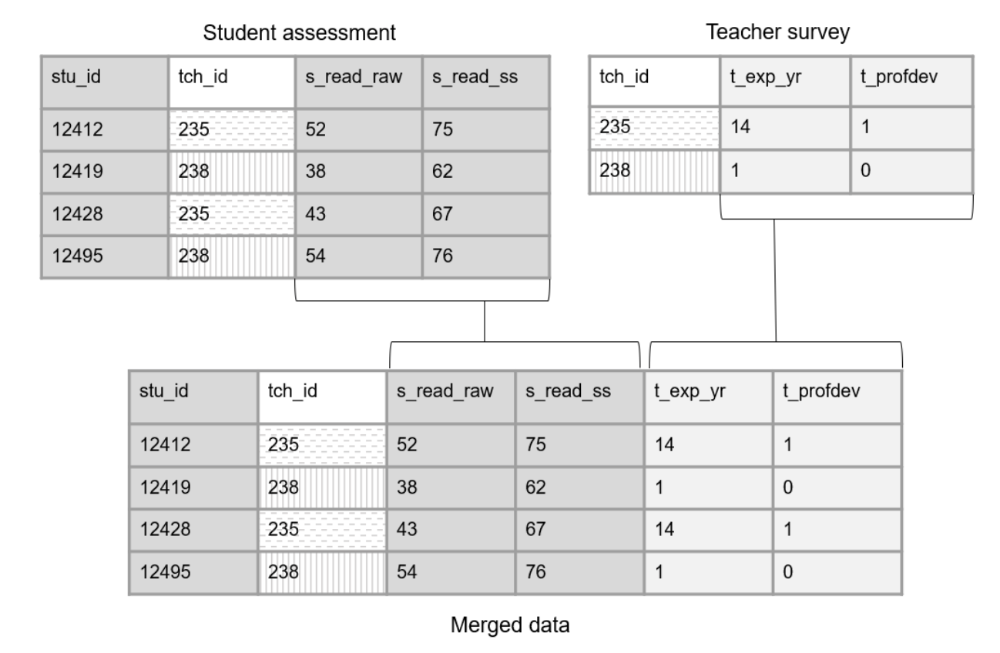Linking data through foreign keys from Lewis (2024).
Linking data
Vertical joins
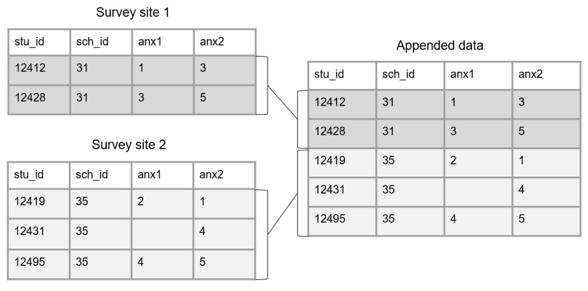Appending data across sites from Lewis (2024).
Data structure
Wide format
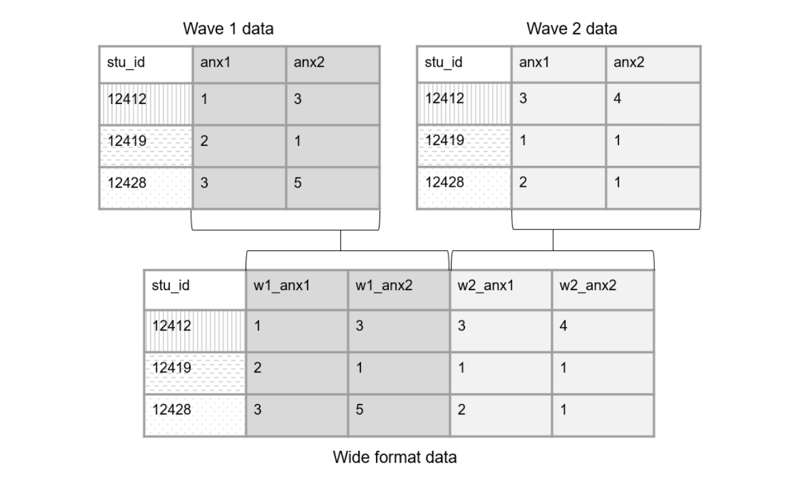Example linking tables across time in wide format from Lewis (2024).
Data structure
Long format
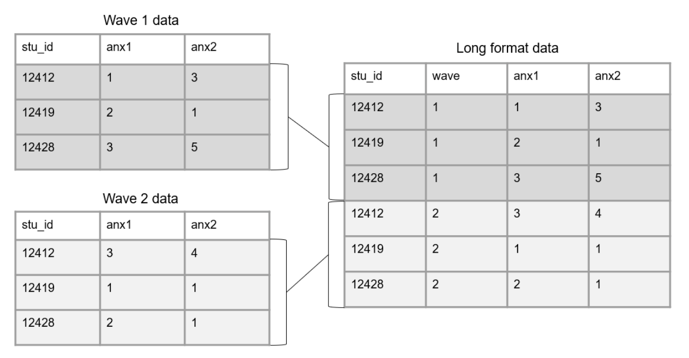Example linking tables across time in long format from Lewis (2024).
Human Subjects Data
Identifiability of a dataset
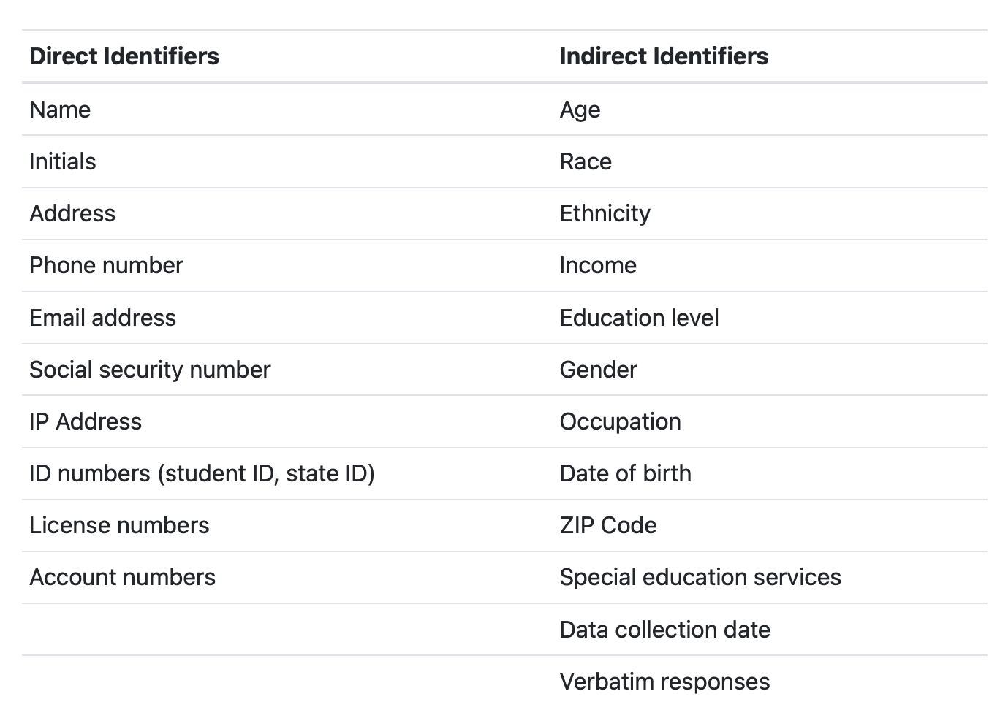Examples of direct and indirect identifiers from Lewis (2024).
Human subjects data oversight
- Regulations and laws:
- Institutions and departments
- Agreements
Protecting human subjects data
- Regulations and laws:
- Institutions and departments
- Agreements
Data Management Plan
What is it?
- Description of data to be shared
- Format of data to be shared
- Documentation to be shared
- Standards
- Data preservation
- Access, distribution, or reuse considerations
- Protection of privacy and confidentiality
- Data security
- Roles and responsibilities
- Preregistration
Documentation
Dataset-level
- README
- Changelog
- Data cleaning plan
Variable-level
- Data dictionary
- Codebook
Fields to include in a data dictionary from Lewis (2024).
Style Guide
Style Guide
- A style guide provides general rules for the formatting of information.
General good practices
- Avoid spaces.
- With the exception of (_) and (-), avoid special characters.
- Pick a naming convention.
- Character length matters.
Directory structure
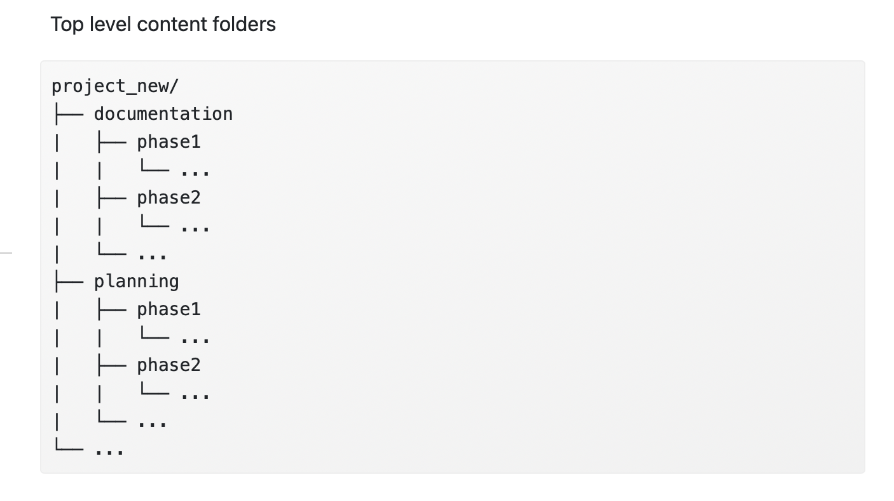Top level content folders from Lewis (2024).
Naming folders
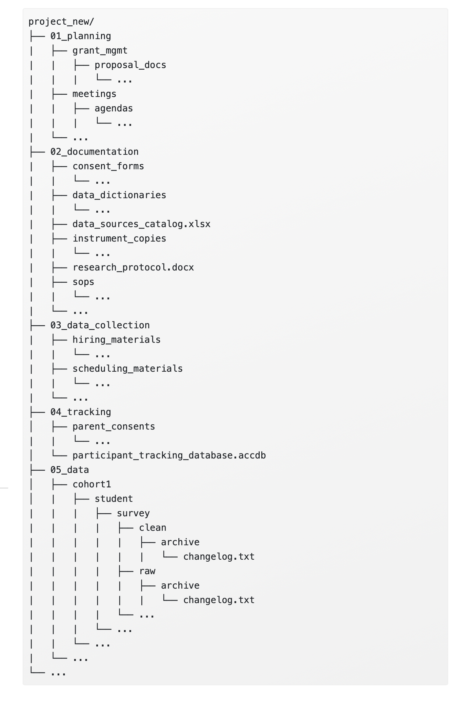Top level content folders from Lewis (2024).
File naming

“Documents”, from xkcd.com via Lewis (2024).
Variable naming
- Don’t use spaces or special characters, except (_).